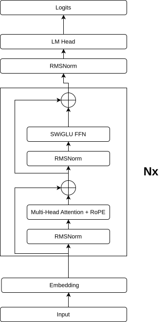
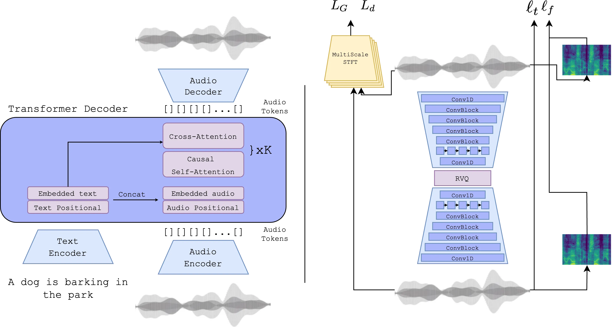

Bird vocalizations place a distinctive position in the landscape of audio signals. Unlike human speech or music, they exhibit rapid frequency modulations, complex harmonic structures and species-specific temporal patterning that vary dramatically across thousands of birds. Despite this acoustic richness, bird vocalization generation remains a largely underexplored task. The existing approaches operate in the spectrogram domain through variational autoencoders or continuous diffusion models, both of which depend on spectral inversion and do not model temporal dependencies at the token level. Meanwhile, autoregressive generation over discrete tokens produced by neural audio codecs has become the dominant paradigm for speech synthesis and general audio generation, yet it has not been applied to avian bioacoustics, a domain whose spectrotemporal characteristics differ fundamentally from the structured audio types these methods were designed for.
This work investigates whether the autoregressive discrete-token paradigm can be effectively transferred to species-conditioned bird vocalization synthesis. Two complementary architectures are proposed: a Transformer language model trained from scratch on hierarchical multi-scale codec tokens, and a large-scale text-to-audio model whose conditioning mechanism is replaced with learned species embeddings. A dedicated data preparation pipeline transforms noisy, imbalanced citizen-science recordings into curated training set through classifier-driven filtering, event-level audio extraction, and controlled cross-dataset enrichment. A multi-dimensional evaluation protocol spanning three independent embedding spaces quantifies both species fidelity and overall acoustic realism, accompanied by ablation studies on inference-time reranking and sampling temperature.
Findings in this work establish that autoregressive codec-token generation is a viable paradigm for such an unconventional audio domain and lay the groundwork for future applications, including data augmentation for rare-species classifiers and broader computational bioacoustics research.
A 12-layer causal language model (768-dim, 12 heads) trained on interleaved SNAC tokens. SNAC encodes 32 kHz audio into 4 hierarchical codebook levels (4096 entries each), producing 15 tokens per time step. Species conditioning via a class token prepended before BOS.

AudioGen-medium (EnCodec-based) with the text conditioner replaced by a learned species embedding + linear projector. Three-stage training: conditioner only → LoRA (rank 16, alpha 32) + conditioner → refined LoRA + conditioner.

Generated bird vocalizations from each model compared to ground-truth XCM recordings.
| GT | AudioGen | LLaMA | |
|---|---|---|---|
| Barred Forest-Falcon | |||
| Boat-billed Flycatcher | |||
| Collared Forest-Falcon | |||
| Common Potoo | |||
| Great Antshrike | |||
| Piratic Flycatcher | |||
| Roadside Hawk | |||
| Social Flycatcher | |||
| Tropical Kingbird | |||
| Tropical Screech-Owl | |||
| White-tipped Dove |